Project::Ukiyo「浮世」
| People: | Gavin Zimmerman |
| Timeline: | Apr 2022 - May 2022 |
| Media: | Indie Animation |
| Tech: | Blender 3.1, Substance Painter |
| Link: | N/A |
Table of Contents
Project::Ukiyo「浮世」
This project was completed as part of a final for "Early Modern Literature: The Floating World of Play and Passion", a course taught by Professor Clarence Lee at University of Colorado, Boulder.
Adapted from Asai Ryoi's "Hand Puppets", Project::Ukiyo「浮世」 is a modern haunting of the peony lantern. Here the lantern decorated with peonies represents the presence of the ghost character from the "original" piece.
Concept
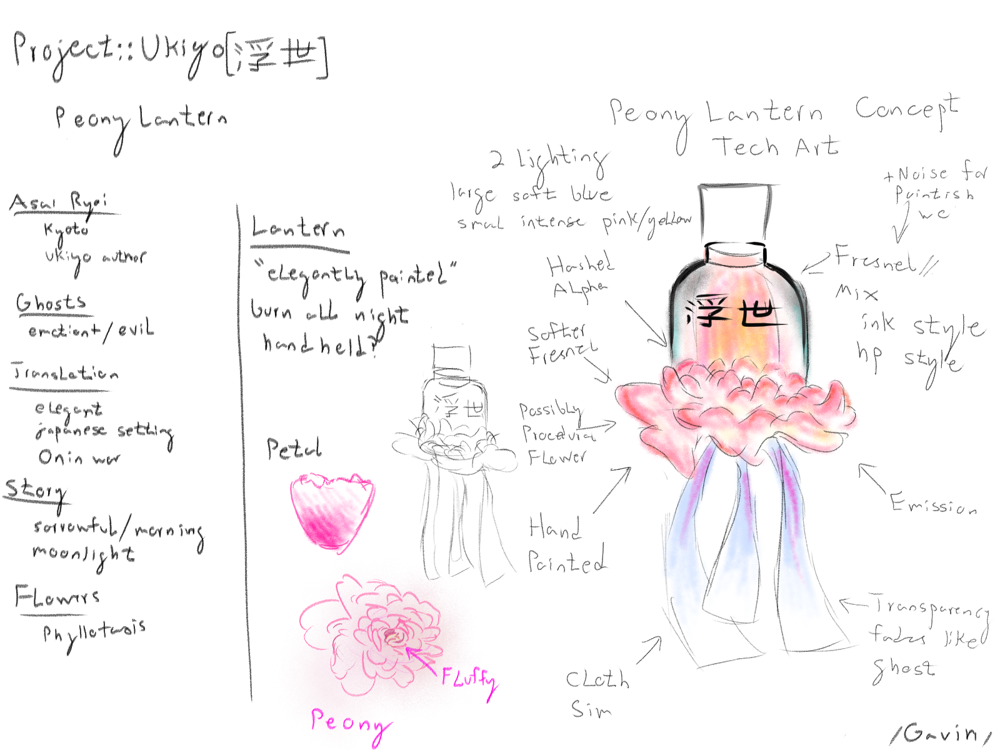1
- Initial concept w/ technical notes and reference considerations
Breakdown
As with all my projects I've included a detailed breakdown on the making behind this animation. This includes: design considerations, code, renders, reference analysis, and much more.Scene Breakdown
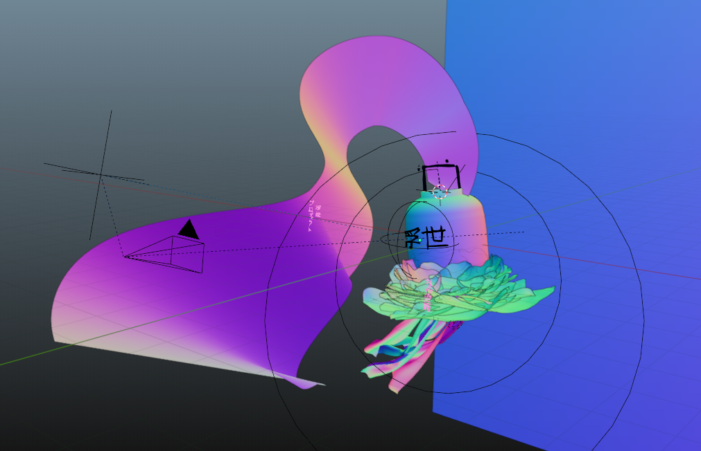1
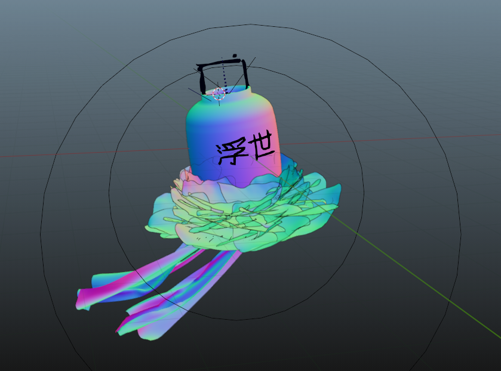2
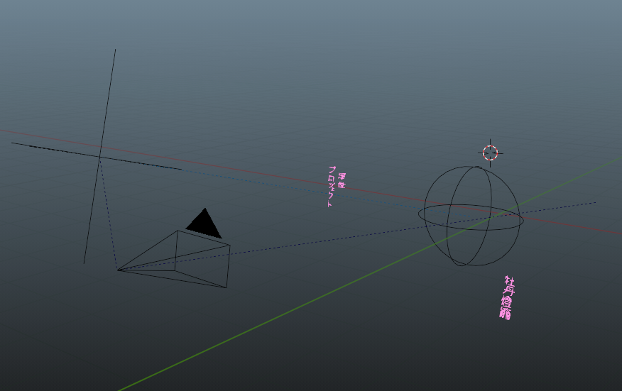3
- Solid view of full project
- Solid view on lantern setup
- Solid view on camera setup
Object [Parent-Child] Hierarchy
- Background
- Smoke
- Lantern Body
- Flower
- Fabric/ Cloth
- Outer Light
- Inner Light
- Lantern Text
- Lantern Handle
- Camera Setup (Empty)
- Camera
- Pink Text
- Focus Point (Empty)
- Camera
The lantern is a rigid body, so the objects parented under the lantern move with it. Similarly, the 2D UI text is parented under the camera to remain in the same position between various shots. An empty is also added to the camera system, where a modifier is applied to constrain the camera pointing towards it. This allows the focus of the camera to be easily animated.
Finally, the smoke visual and background are stationary elements- although the background is repositioned per camera angle.
Materials and Shaders
Shaders are small graphical programs which determine the color of each pixel individually. In Blender, shaders are node-based and used extensively to create the visuals for this project.Lantern
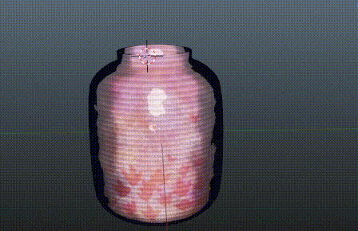1
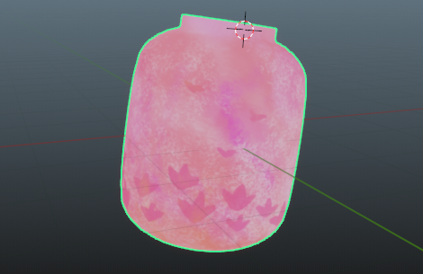2
- Final lantern material
- Base diffuse color; painted in Adobe Substance Painter
To give the lantern a 'ghostly' quality, the edges were made to fade in transparency. This was to both accomplish a sense of existence and non-existence based on where you viewed the lantern; which diverged from previous representations of depicting 'ghostly' objects as a constant semi-transparent color.
To create the effect, a fresnel node is mapped to the object's transparency. Noise is mixed in with the initial normal to give the taper a non-uniform shape.
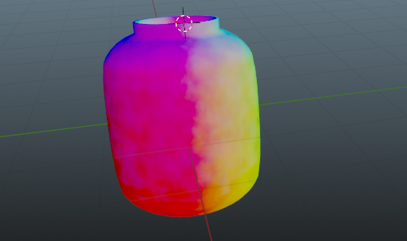
3
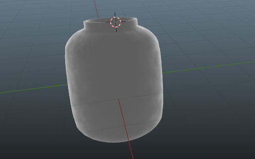4
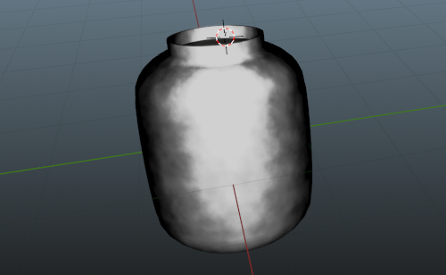5
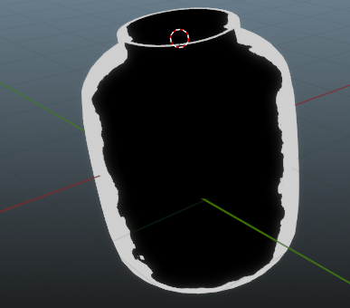
6
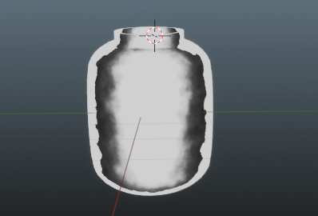7
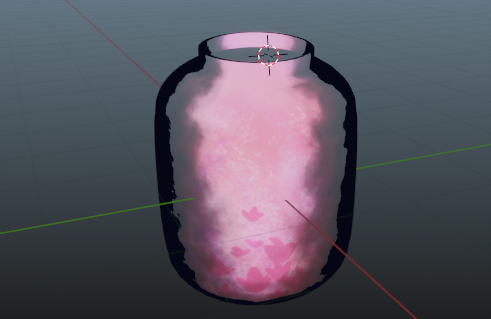8
- Normal w/ noise
- Fresnel
- Remapping
- Second fresnel clamped with greater than operation
- Combined fresnels
- Colored
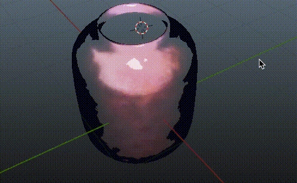
9
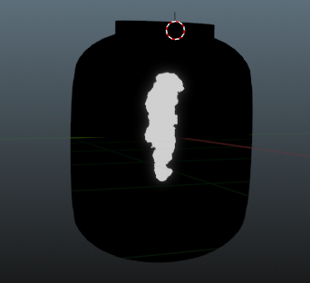10
- Material w/ highlight
- Highlight Blending Mask from Fresnel
The added shadows/occlusion of the inner rings create the illusion that the material is thin and non-smooth. This was achieved by sampling geometric data, multiplying the Z (up) coordinate by the ring frequency and taking the sine value of that.
For the lighting to look physically right, this operation needed to be performed twice with an offset applied to the Z coordinate on one. One set would act as the shadow and another would act as the highlight, which would illuminate the lantern as if the lighting was at an angle.
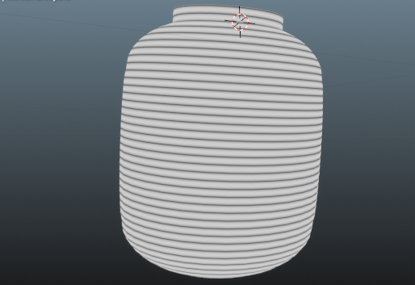
11
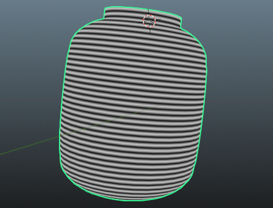12
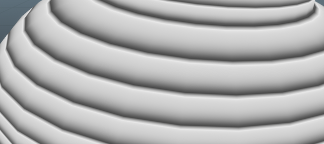
13
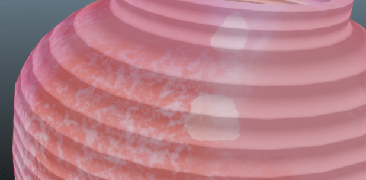14
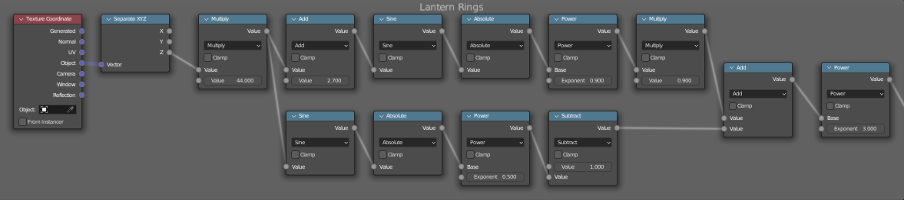
15
- Highlight
- Shadow
- 11 and 12 combined for full occluded light effect
- Used as blending factor on original color
- Node tree for fake ring lighting
Fabric/ Ghostly Cloth
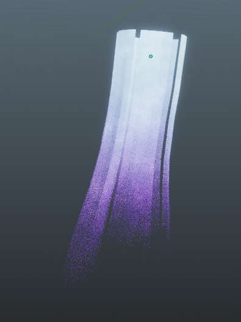1
For fabric, I wanted to create another transparency gradient that would look similar to a ghost tail. The fabric itself would reference qualities in the original text and attempt to accomplish a color palette synonymous with a full moon, which inspired the emissive blue-purple gradient. Although the original lantern itself wasn't described this way, here it would serve as a symbolic symbol for the ghost character itself.
Geometry-based data could not be used for this since the material would be deformed by cloth simulation, so a UV map is used to provide height data.
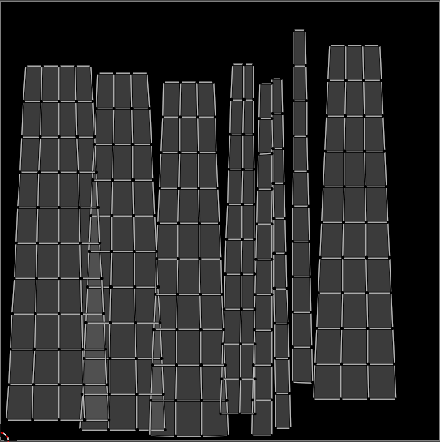
2
- Final fabric material
- UV map as height data
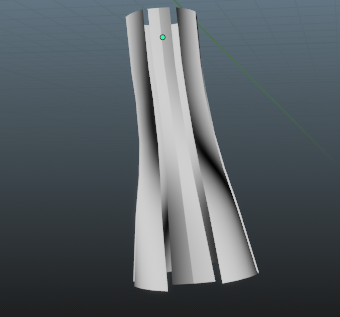
3
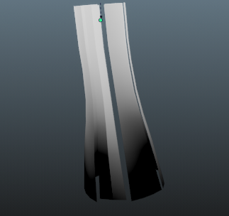4
- Wave texture
- Height data w/ wave offset
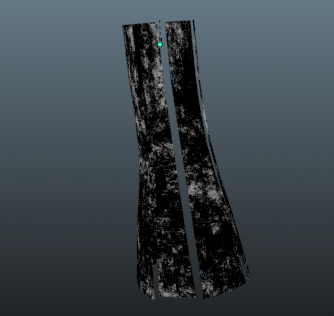
5
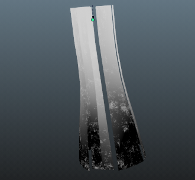6
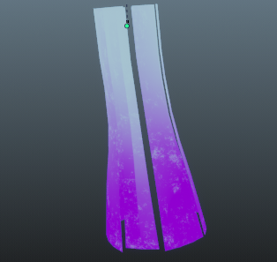7
- Generated noise
- Noise on height data
- Color gradient
Smoke
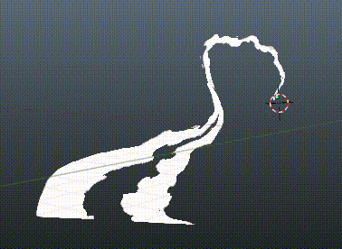1
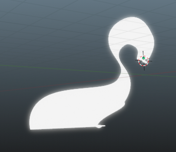2
- Final smoke material
- Geometry generated from extruding a bezier curve
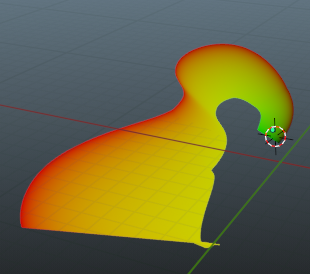
3
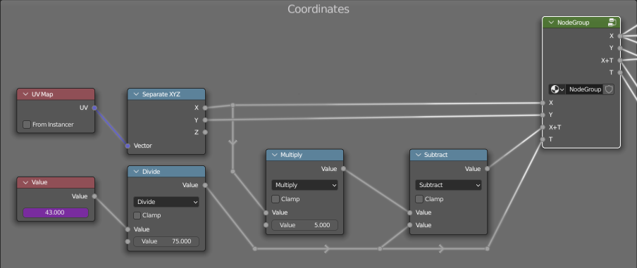4
- UV map on geometry
- Node setup for coordinate values
This was made possible by plugging the rolling vertical position (X + time) into a 1D noise function. The amplitude of this noise is multiplied with a float curve, so that the offset isn't too large at the beginning. Finally the noise gets mapped to a [-1, 1] range and added onto the existing Y position.
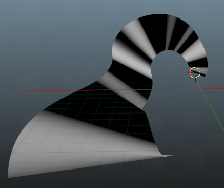
5
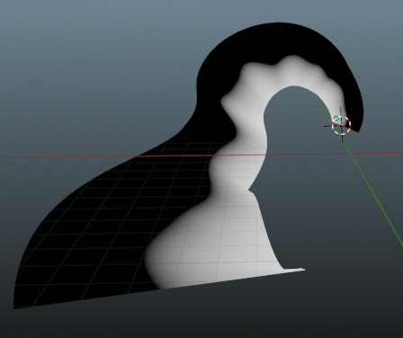6
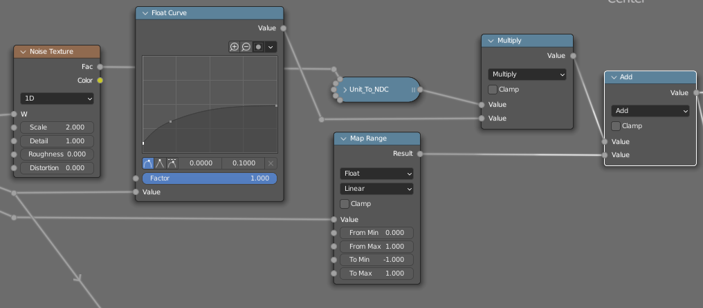
7
- 1D noise for center displacement
- Displace center
- Node setup
For making the center transparent, two centers are offset from the original for the smoke to follow along. This was done by taking the sign value of the Y position and multiplying that by a float curve responsible for the desired offset. The sign value here is also added onto the noise used to generate the smoke shape, so that each side had different noise values and wouldn't look symmetric.
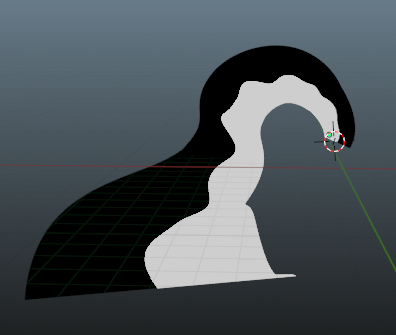
8
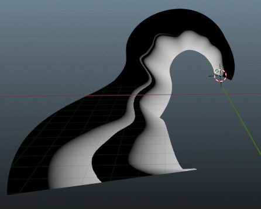9
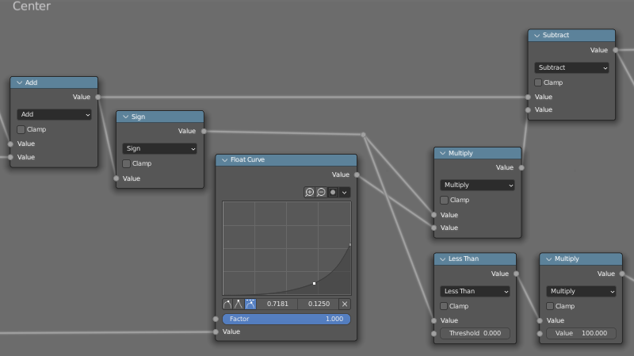
10
- Y sign Value
- Two centers
- Node setup
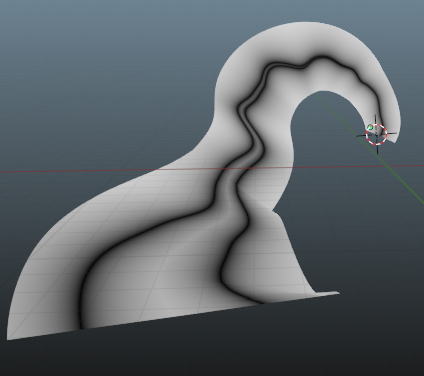
11
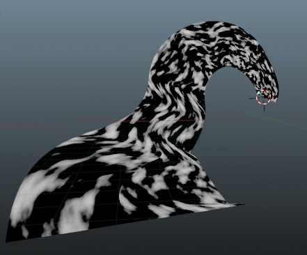12
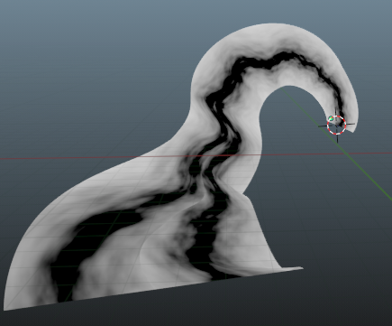13
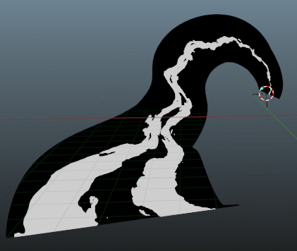14
- Absolute value of two center coordinates to create a distance field
- Noise generated from rolling coordinates (X+T, Y, T)
- Noise + distance field (11)
- Check if distance is greater than some threshold
Procedural Flower
The peony flower featured in the Peony lantern is entirely procedural here. This allowed for significant customization over render iterations.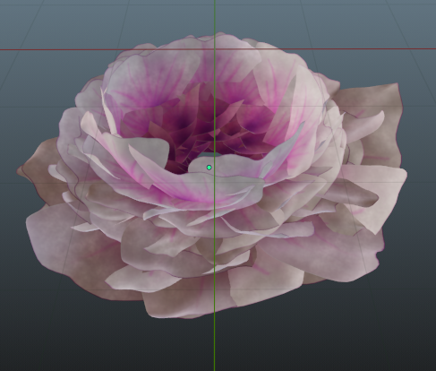
1
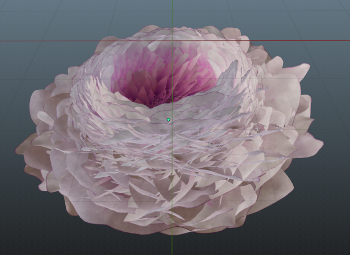2
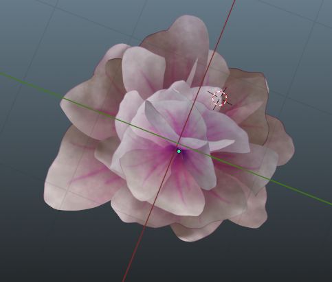3
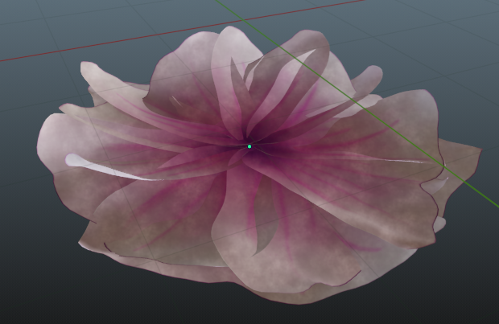4
- Final flower design
- 100 Petals
- 15 Petals; Falloff exponent: 1.0
- 15 Petals; Falloff exponent: 0.1
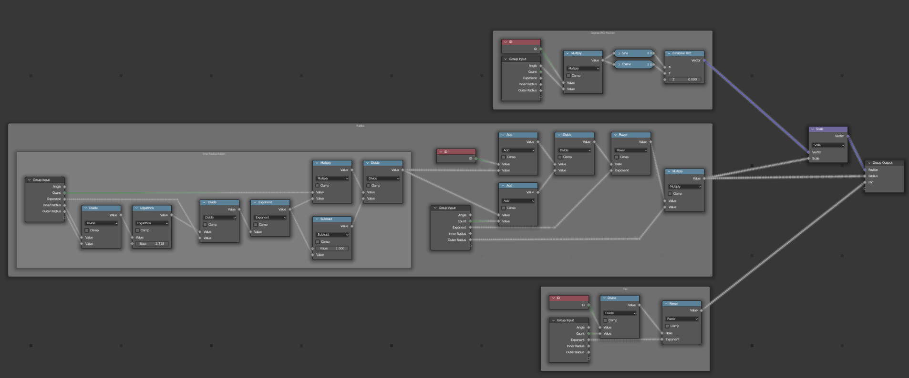
5
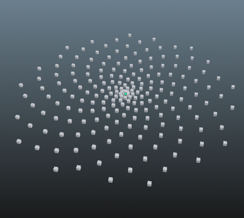6
- Phyllotaxis algorithm
- Algorithm plugged into positions for cube instances
- Positions with Z (Up) offset based on factor
For the z-offset a float-curve is plugged into the factor output of the phyllotaxis setup (a [0-1] range describing distance from center).
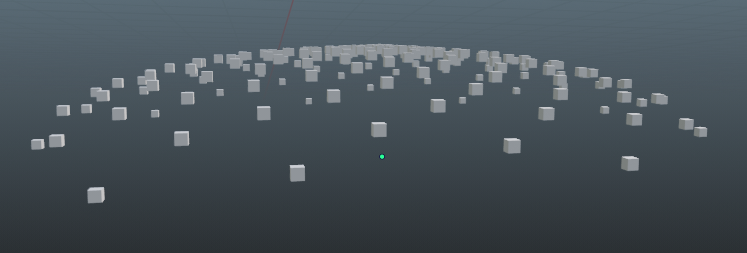
7
Three values are calculated for the rotation vector (roll, pitch, and yaw). Here the roll angle is very small since flowers don't curve that way. Pitch uses a similar float curve as the Z offset, and is mapped to a [10, -85] degree range. Finally, yaw simply uses the arctangent-squared result of the x and y positional inputs. All these values are then plugged into the 'rotate euler' node to give the final rotation.
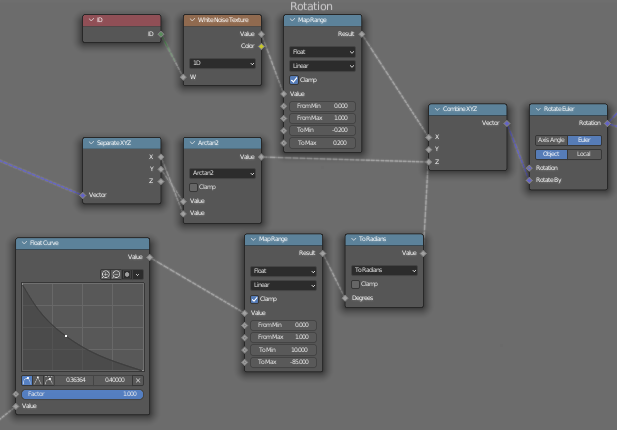
8
9
- Rotation Node Setup
- Rotation Result
Sourced Assets
To make this project come together, I had to source assets produced by other artists. This included the background and sound effects used.The background texture is a background cel taken from Studio Ghibli's Spirited Away and is painted by Kazuo Oga. I omitted the mini house statues from the original illustration and recolored some areas slightly to better fit the project's color scheme.
For sounds, I wanted traditional Japanese instruments to accompany the animation.
But I could not find anything googling with English searches. However with a localized search, I quickly found a beautiful sound repository at: otologic.jp and at commons.nicovideo.jp.
Technical Direction
Below I've included various design choices and commentary on the project. This includes color theory analysis, compositing/post-processing tricks, scene composition, animation and camera work, and lighting setup.Lighting, Color, Rendering Passes
Let's start with the rendering passes.Combined/ Final
Diffuse Color
Emission Color
Shadow
Gloss Color
Bloom
Emission and Bloom
Many objects in the scene are lit in some form with emission light [Background, Fabric, Smoke, Lantern, and textual elements].This served two purposes: to saturate the colors and provide a bloom effect. The bloom effect here was made to emphasize the object as supernatural and ghostly. Looking at original Ukiyo-e depictions of the lantern, the artists here chose to contrast the lantern against the background by value. This illuminates the lantern and smoke like emissive objects, something the bloom effect takes to another level.

1

2
- Ukiyo-e Reference 1
- Ukiyo-e Reference 2
Color Scheme
The color scheme from these references also uses color as a way to contrast the peony lantern against the background. This inspired the color scheme behind my own animation.For the background I choose to exhibit [greens, green-yellows, blues, browns, greys] which would pair with the [red, pinks, purples, and blues] in the foreground. This is roughly close to complimentary colors on the color spectrum, especially with pinks on dark greens.
Transparency
Most elements in the scene are also transparent [Smoke, Fabric, Lantern]. Implementing transparency in 3D correctly is quite difficult due to blending order. Thus multiple techniques for handling transparent objects have come out.Here two different transparency implementations are used known as 'alpha hashed' and 'alpha-blending'. Alpha hashed has a notable grainy result, akin to ray-tracing, and provides relatively accurate forms of transparency. This is used in both the smoke and fabric to add texture to both elements.
Alpha-blending was alternatively used on the lantern. This is why the lantern is not visible in the render passes, as these transparent objects are deferred after the first render. Whereas alpha-hashing can provide a gradient (unlike alpha-clipping), it cannot be used jointly with emission. For example, you can see above that the smoke isn't very transparent but is emissive. Since the lantern uses both emission and transparency of equal proportions, alpha-blending was required here.
Lighting
Beyond emission, the scene contains two small light sources parented under the lantern. The first is colored pink-red and the second is colored light blue. Together these form the light gradient on the flower.The flower uses a translucent shader which allows these lights to bleed through layers of petals. To prevent light being occluded by too few layers, a bias parameter was customized.
Post-Process/ Compositing
Noise is overlaid over each element in the scene and is most visible on top of the flower. This effect is meant to texture the entire scene similar to original Ukiyo-e paintings and provide a cohesive visual quality. Unlike traditional post-processing techniques, this is performed in each shader prior to lighting calculations.Simulation
Cloth simulation is implemented to drive the animation of the hanging fabric. Here a vertex group is created for the top-most vertices which are used to pin the fabric to the lantern.Gravity and wind forces both make up the motion of the cloth simulation. The wind angle is pointed to the top-left and is perpendicular to the camera angle. This is done so that the motion of the cloth is clear and visible for the viewer.
After the physics were properly tuned the simulation was baked, since the simulation is not performant in real time.
Animation
Camera Angles
The lantern is the subject and main character of this animation. But the lantern had to also appear as something exotic, interesting, and as an extension of nature (supernatural).Thus the camera angles were set up to "document" the lantern from a distanced and excluded perspective. This perspective would have been lost if the camera was animated between angles, as the camera would have become an additional character in the animation. This was realized after attempting to animate the camera, which I had initially wanted to use to showcase the dynamic look on the materials.
Discrete camera angles allowed for sudden transitions in the animation and offset the various visual aspects so that the animation never became boring. The primary visual of the first shot is the smoke coming from the lantern. Then in the second shot, the viewer notices the subtle details of the flower and lantern which were too small before. Finally in the last shot, we get a side profile of the scene which better places it in 3D and contributes to the full "documentation" of the peony lantern.
Lantern Keyframe
The lantern uses a key animation on 40s to swing back and forth between roughly two angles. This was to showcase its physical nature pivoting on the handle.Without this animation the stationary object would have been confusing. The presence of some physics suggests that it is where it should be, that the floating nature is physically correct. Of course a Ghibli-style hand holding the handle and fading out at the wrist would have also been a nice touch for this quality, but ultimately was out of my animation skill set.
Rendering Process
There were many renders- several a day for at least a week, on the order of 40 something total.To expedite the rendering process, I set the frame rate to 12. On the final render this could have been set higher, but I found the more choppy motion to be more representative of the theme.
A dedicated laptop was used as a sole rendering farm, with fairly modern technology averaging a frame every 4 seconds.
Oftentimes, small portions of the animation were rendered to analyze specific components. For example, when testing out the smoke animation, only the first 10 seconds were rendered. Single frames were also rendered for analysis on color-setting, desired line-art thickness, textual placing, and many other visual elements on this project.
Wrap Up / Final Notes
I'm personally very impressed and proud of this project. This was my first production project. Here I was able to implement simulation, animation, post-processing, and lighting with my knowledge of animation production as a whole.Waiting on renders/bakes to finish while doing other work was a great feeling. The workflow can be so diverse and there is immense room for creativity. Applications of principles in art, tech, animation, and production all come together in these projects which is a great learning boost. The scope is also incredibly manageable (opposed to my previous projects attempting to make whole 3D games).
Ultimately, this stands at the top of my favorite projects and the class for which I made this stands at the top of my favorite courses. As something largely created out of self-discipline and learning, I'm truly very proud to say I have produced this small animation of the infamous Japanese Peony Lantern.